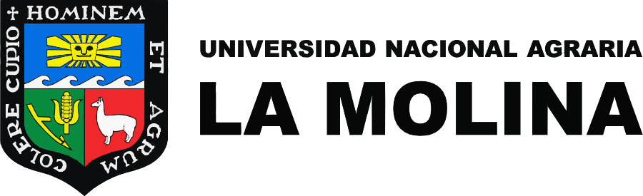

Proyecto:
Determinación del efecto de diferentes estrategias de riego sobre la acumulación de antocianinas en maíz morado (Pop Corn).
Unidad Experimental:
TRATAMIENTO:
REPETICIÓN:
CÓDIGO:
Proyecto:
Determinación del efecto de diferentes estrategias de riego sobre la acumulación de antocianinas en maíz morado (Pop Corn).
Unidad Experimental:
TRATAMIENTO:
REPETICIÓN:
CÓDIGO:

El experimento
Se evalúa el efecto de cuatro láminas de riego —60 %, 80 %, 100 % y 120 % de la evapotranspiración del cultivo (ETc)— sobre la acumulación de antocianinas en maíz morado (Pop Corn). Cada tratamiento se aplica en 4 repeticiones distribuidas en 16 lisímetros circulares, con surcos de siembra dentro de cada uno. Junto al área opera una estación meteorológica que provee los datos para calcular la ETc.
El ortomosaico
Fondo generado por fotogrametría con dron el 25-08-2026: DJI Lito X1 a 18 m sobre el terreno, 84 fotos (48 MP), solape 80/80 %, plan de vuelo Litchi Hub de 249 waypoints, procesado en WebODM a 1 cm/píxel (GSD real 0.29 cm/px, EPSG:32718).